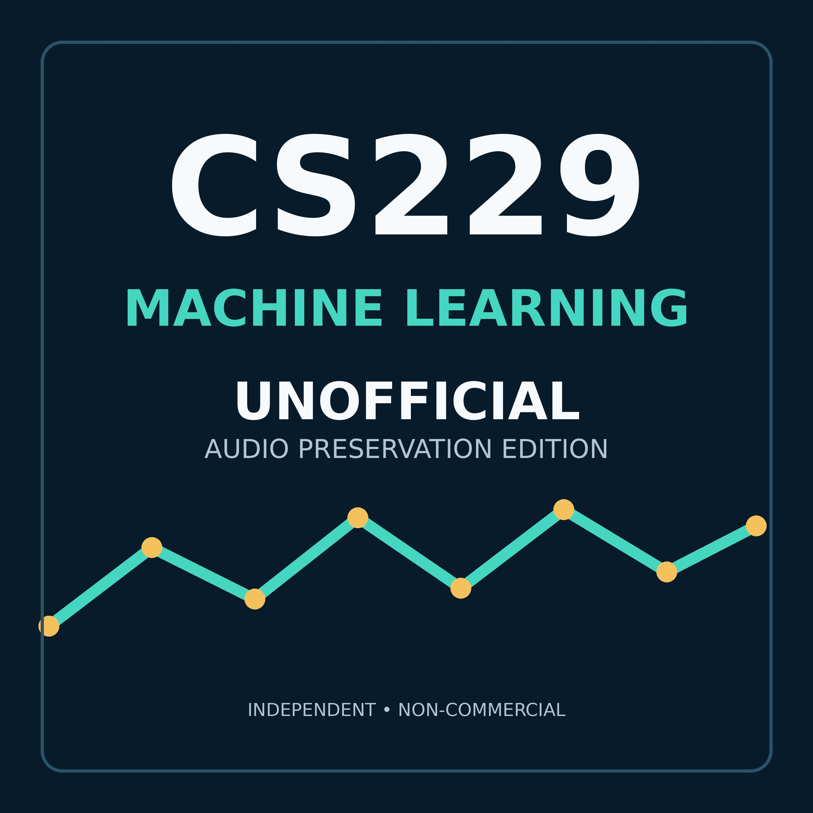

CS229 Machine Learning — Unofficial Audio Preservation Edition
Andrew Ng's 20-lecture CS229 Machine Learning course, sourced from Stanford Engineering Everywhere and preserved as an audio-only edition without re-encoding. This independent preservation project is not endorsed by Stanford University or Andrew Ng.
Download the verified audio and canonical preservation ZIP
Add the feed URL manually in a podcast application that supports URL subscriptions.
Lectures
- 01 Motivation and applications of machine learning 01:08:40
- 02 Supervised learning and linear regression 01:16:15
- 03 Locally weighted and logistic regression 01:13:13
- 04 Generalized linear models 01:13:06
- 05 Generative learning algorithms 01:15:31
- 06 Neural networks and SVM margins 01:13:09
- 07 Optimal-margin classifiers and kernels 01:15:44
- 08 Kernels, soft-margin SVM and SMO 01:17:18
- 09 Learning theory and uniform convergence 01:14:18
- 10 VC dimension and model selection 01:12:56
- 11 Diagnostics and practical machine learning advice 01:22:19
- 12 K-means and expectation maximization 01:14:22
- 13 Mixture models and factor analysis 01:14:57
- 14 Factor analysis and principal components 01:20:39
- 15 SVD and independent component analysis 01:17:18
- 16 Markov decision processes 01:13:05
- 17 Continuous-state reinforcement learning 01:16:59
- 18 LQR and dynamical systems 01:16:37
- 19 Kalman filtering and LQG 01:15:55
- 20 POMDPs and policy search 01:16:39